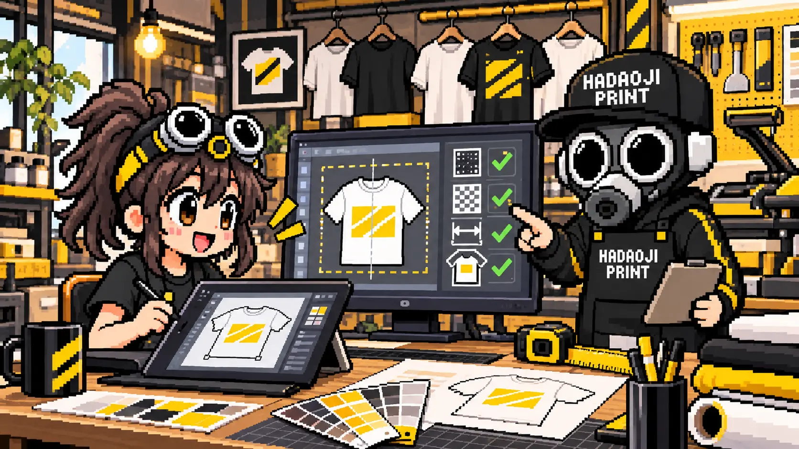
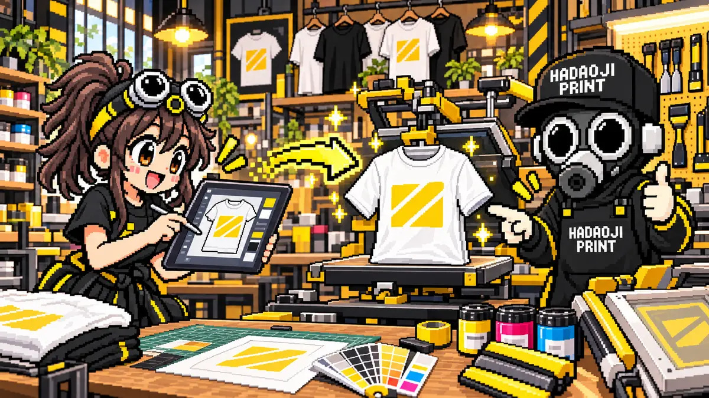
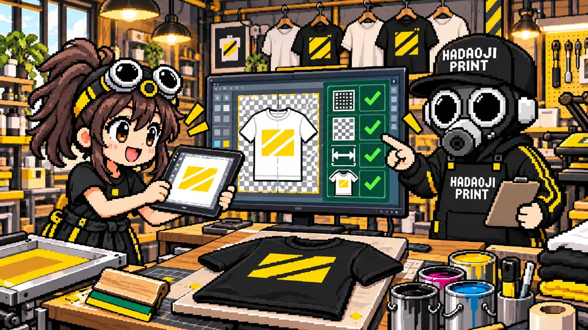

結論：スマホのCanvaだけでもTシャツは作れます
Canvaで文字・写真・ロゴを配置し、完成したデザインをTシャツにできます。パソコンや専門ソフトがなくても大丈夫です。まず知っておきたいのは、Canvaで直接プリントを注文する方法と、デザインを保存して外部のプリント店へ入稿する方法の2通りがあることです。
Canvaから直接注文
Canva内でデザインから注文まで進めたい人向け。対応商品・価格・配送条件を確認して注文します。
プリント店へ入稿
生地、プリント位置、枚数、加工方法を相談したい人向け。この記事はこちらの方法を中心に説明します。
失敗を減らすポイントは、大きめのサイズで作る・プリントする絵柄だけを書き出す・PNGまたはPDFで保存する・希望の位置と横幅を伝えるの4つです。無料版でも文字・図形・写真の配置と保存はできますが、PNGの背景透過など一部機能は利用プランによって異なります。

自分用、チーム用、販売用を決める。
「Tシャツ」でテンプレートを検索。
印刷したい比率と大きさで作る。
文字・写真・ロゴを配置する。
Tシャツ色に重ねて見え方を確認。
PNGまたはPDFでダウンロード。
位置・横幅・色・枚数を伝える。
CanvaでTシャツを作る7ステップ
作る目的とTシャツの色を決める
自分用、プレゼント、チーム、販売用のどれかを決めます。白・黒・カラーなどボディ色も先に決めると、文字や絵柄の色を選びやすくなります。
Canvaで「Tシャツ」を検索する
Canvaアプリまたはブラウザを開き、検索欄へ「Tシャツ」と入力します。気に入ったテンプレートを選ぶか、「カスタムサイズ」で新規作成します。
プリント位置と実寸を決める
「左胸に横10cm」「胸中央にA4程度」「背中に横28cm」のように、位置と完成時の大きさを決めます。迷う場合は希望位置だけ決め、プリント店へ相談できます。
文字・写真・ロゴを配置する
文字や画像をページ端へ詰めすぎず、細すぎる線と小さすぎる文字を避けます。テンプレート素材は色・文字・配置を変更し、自分の内容に合わせます。
Tシャツ色に重ねて確認する
白いデザインは白Tシャツで見えにくく、黒いデザインは黒Tシャツで沈みます。完成イメージ用のページを複製し、背景を予定しているTシャツ色に変えて確認します。
PNGまたはPDFでダウンロードする
背景を透明にしたいロゴ・イラストはPNG、文字や図形中心で配置を保ちたい場合はPDF（印刷）が候補です。スクリーンショットではなく、Canvaの「共有」→「ダウンロード」から保存します。
位置・横幅・色・枚数を添えて入稿する
保存したファイルと一緒に「左胸・横10cm・黒Tシャツ・20枚」のように伝えます。PNGとPDFのどちらがよいか分からない場合は、両方を送れば確認できます。
Canvaの操作画面はこの3か所を見ればOK
Canvaの画面はアプリや更新時期によって少し変わりますが、基本はテンプレートを探す・編集する・保存するの3画面です。ボタン名が多少違っても、次の順番で進めれば迷いにくくなります。


※図は操作箇所を分かりやすくしたイメージです。Canvaの実際の画面、ボタン名称、背景透過の利用条件は端末・アプリ版・契約プラン・更新時期によって異なる場合があります。

Canvaの作成サイズは最初から大きめにする
小さく作った画像を後から拡大すると、文字や線の輪郭がぼやけます。プリントしたい実寸と同じ縦横比で、十分なピクセル数を確保しましょう。Canvaで「カスタムサイズ」を選べる場合は、単位をpxにして作ると分かりやすくなります。
210 × 297mmを300ppi相当で考えた参考サイズ。縦長デザインに向きます。
297 × 420mmを300ppi相当で考えた参考サイズ。大きな背面デザイン向きです。
左胸のような小さなプリントでも、最初から小さな画像にする必要はありません。大きく作ったデータを縮小する方が、輪郭を保ちやすくなります。
※上記は画像データを作るときの参考値です。必要解像度は絵柄とプリント方法で異なります。PDF内の文字や図形が鮮明でも、配置した写真そのものが小さければ写真部分の画質は上がりません。
Tシャツの完成イメージとプリントデータを分ける
文字やロゴはページ端へ詰めすぎず、少し余白を残して配置します。プリントする絵柄以外の背景色・ガイド・不要な素材が残っていないかも確認しましょう。
Tシャツの写真やモックアップにデザインを重ねた画像は、位置を伝える資料として便利です。ただし、その画像をそのままプリントデータにすると、Tシャツの写真まで含まれてしまいます。完成イメージ用の画像と、絵柄だけの入稿データを分けて保存してください。
完成イメージへ使うボディの大きさに迷う場合は、先にTシャツサイズ表の見方と手持ち服との比較方法を確認すると、サイズごとのプリントバランスも考えやすくなります。

Canvaのページサイズだけでは、Tシャツ上の大きさは確定しません。入稿時に「横25cm・胸中央」「襟下8cmから」のように実寸と位置を添えてください。
Canvaの入稿データはPNGとPDFのどちらがよい？
透過背景・画像向き
ロゴ、イラスト、文字デザインを一枚の画像として渡しやすい形式です。
- 透明部分を保持できる
- スマホでも確認しやすい
- できるだけ大きなサイズで保存
文字・図形・配置向き
レイアウトを保ちやすく、文字や図形中心のデザインに向いています。
- 配置を保ちやすい
- 文字・図形中心のデザイン向き
- 配置画像の元画質は改善しない
| 確認項目 | PNG | PDF Print |
|---|---|---|
| 背景透過 | 対応 | 制作店へ確認 |
| 写真・画像 | 相性がよい | 元画像の画質に依存 |
| 文字・図形 | 画像として統合 | 配置を保ちやすい |
| スマホでの確認 | しやすい | PDFアプリで確認 |
迷った場合は、PNGとPDF Printの両方を保存してください。写真を使っている場合は、Canvaへ配置する前の元画像も残しておくと、プリント店側で画質や切り抜きを確認しやすくなります。
JPGは背景を透明にできません。白背景を含めて四角く印刷したい場合を除き、ロゴやイラストの入稿ではPNGまたはPDFを優先します。
白い四角を出したくないなら背景を透過する
Canva公式では、Tシャツなどのアパレル用デザインは背景を透明にする方法が推奨されています。外部のプリント店へ渡す場合も、絵柄の周囲をTシャツ色のまま見せたいなら透過データが分かりやすくなります。
共有から「ダウンロード」を開く
プリントする絵柄だけのページを選びます。
ファイル形式でPNGを選ぶ
JPGでは透明背景を保存できません。
「背景透過」を有効にする
白い四角を印刷したくない場合に使います。
保存したPNGを拡大して確認する
不要な背景、細い白フチ、小さなゴミが残っていないか確認します。
CanvaのPNG背景透過はプレミアム機能として案内されています。利用できない場合は、白背景のJPGを無理に切り抜いて画質を落とすより、Canvaの元データと「背景を消したい」という希望をプリント店へ伝えてください。
画面の色・細い線・フォントも確認する
画面の色とプリント色は同じではない
スマホやパソコンは光で色を表示し、プリントはインクや生地の影響を受けます。蛍光色のような鮮やかな色、暗い色同士の差、淡いグラデーションは画面どおりにならないことがあります。
細い線と小さな文字は潰れることがある
画面で拡大すると読めても、実寸で数ミリの文字や線はプリント方法によって再現が難しくなります。100％表示だけでなく、希望するプリント幅に縮小して確認します。
フォントはPDFでも必ず確認する
保存後のPDFを開き、文字化け・改行・字間の変化がないか確認します。特殊なフォントを使った場合は、PNGも一緒に用意すると完成形を比較できます。
濃色Tシャツでは白インクの影響がある
黒やネイビーのTシャツへフルカラーで印刷する場合、発色させるため白インクの下地を使う方法があります。細部や半透明部分の見え方はプリント方法で変わるため、事前確認が必要です。
Canva素材をTシャツに使うときは商用利用条件を確認
作れたデザイン＝そのまま自由に販売できる、ではありません
Canva公式は、一定の条件でCanvaの無料・プロ素材を組み合わせたオリジナルデザインをTシャツなどへ印刷・販売できると案内しています。一方、Canva素材を単体のまま印刷・販売することや、自分が著作権を持つと誤認させる利用には制限があります。
自分で作ったロゴや撮影した写真でも、第三者のブランドロゴ、アニメ・ゲームのキャラクター、著名人の画像などは別の権利確認が必要です。個人用・チーム用・販売用のどれかをプリント店へ伝え、使用した素材の最新ライセンスをCanva公式で確認してください。
プリント店で実際に確認するCanva入稿の失敗例
Canvaの画面では完成して見えても、プリント用データとしては確認が必要なことがあります。次の状態でもすぐ作り直す必要はありません。元データを残したまま、希望する仕上がりを制作店へ伝えてください。
Canvaのページを大きくしても、元写真が小さければ大判プリントでは粗くなります。元写真も一緒に送ると判断しやすくなります。
白い四角もデザインとして印刷される場合があります。白を残すのか、輪郭で切り抜くのかを伝えます。
同じデータでも横10cmと横28cmでは見え方が変わります。横幅と位置をcmで指定します。
プリント方法によっては潰れたり、欠けたりします。太くする、文字を大きくする、プリント方法を変えるなどの代替案があります。
完成イメージは伝わりますが、画面表示や余白が入り、元データより画質も低くなります。PNG・PDFも保存してください。
モックアップは位置確認用に使い、プリントする絵柄だけのファイルを別に用意します。
生地色との境目や白インクの下地で見え方が変わることがあります。使用予定のTシャツ色で確認します。
Canva素材だけでなく、ブランドロゴやキャラクターを含む場合も使用権を確認します。

PNG・PDF・元画像と一緒に「横幅・位置・Tシャツ色・枚数」を送れば、プリントできる状態か確認してもらいやすいね！

Canvaデータをプリント店へ送る前のチェックリスト
- CanvaからダウンロードしたPNGまたはPDF Printがある
- 写真を使った場合は、配置前の一番大きな元画像も残している
- プリントする絵柄だけのデータと、Tシャツ合成イメージを分けた
- 白背景を残すか、透明にしたいかを決めた
- プリント位置と横幅をcmで伝えられる
- Tシャツの色、種類、サイズ、枚数が分かる
- 使用日と希望納期を伝えられる
- 販売・商用利用の場合は素材の利用条件を確認した
すべて揃っていなくても相談できます。特に重要なのは、Canvaで作った元データを消さず、分からない部分を自己判断で画像化しすぎないことです。デザイン内容と希望サイズを確認すれば、PNGで進めるか、PDFを使うか、修正が必要かを判断できます。
CanvaでTシャツを作るときのよくある質問
Canvaの無料版でもTシャツデザインは作れますか？
基本的な文字・図形・画像の配置とPNG・PDFの保存は無料版でも可能です。ただし、PNGの背景透過など一部機能は利用プランにより異なります。透過できない場合は、元データと「背景を消したい」という希望をプリント店へ伝えてください。
PNGとPDF Printはどちらを入稿すればよいですか？
透過背景のロゴやイラストはPNG、文字や図形中心で配置を保ちたい場合はPDF Printが候補です。プリント方法や制作店の受付形式でも変わるため、迷う場合は両方と元画像を用意してください。
Canvaの画面をスクリーンショットして送っても大丈夫ですか？
完成イメージの共有には役立ちますが、製造用データには画質が不足することがあります。Canvaのダウンロード機能で保存したPNGまたはPDFも送るのが安全です。
Tシャツのテンプレート画像ごと送れば位置は伝わりますか？
位置の確認資料として使えます。ただしプリント用には、Tシャツ画像を含まない絵柄だけのデータも必要です。横幅や襟からの距離をcmで添えると、より正確に共有できます。
Canvaの素材を使ったTシャツは販売できますか？
一定の条件で販売できますが、Canva素材を単体のまま印刷・販売することはできません。複数要素や独自の文字・構成を組み合わせたオリジナルデザインにし、最新のCanvaコンテンツ使用許諾契約を確認してください。
背景透過ができなくても注文できますか？
相談できます。白背景を残すのか、輪郭で切り抜くのか、Tシャツ色は何色かを伝えてください。データを確認したうえで、切り抜き・描き直し・プリント方法の変更などを検討します。
MISSION COMPLETE!
Canvaデータが印刷できるか無料確認
背景透過、画像サイズ、PNGとPDFの選び方が分からなくても大丈夫です。Canvaから保存したデータと「位置・横幅・Tシャツ色・枚数」を送れば、プリント可能か確認します。
Canvaデータを無料確認 ▶ 相談 LINEでCanvaデータを送る ▶実際のウェアプリント相談・制作経験とCanva公式ヘルプをもとに内容を確認しています。最終更新：2026年9月28日 運営者・編集方針